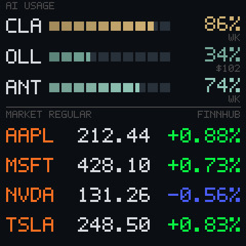
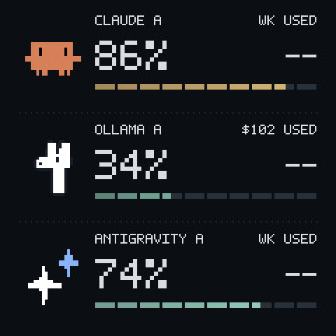
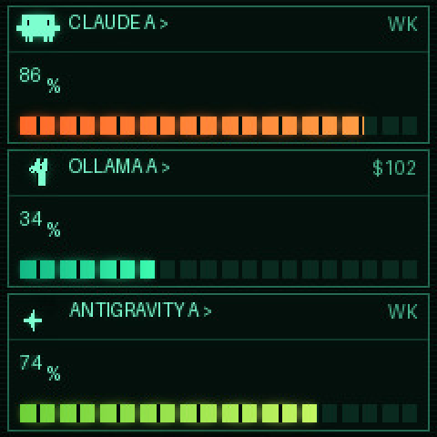
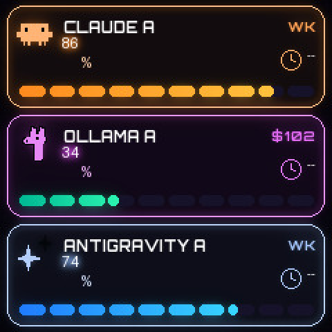
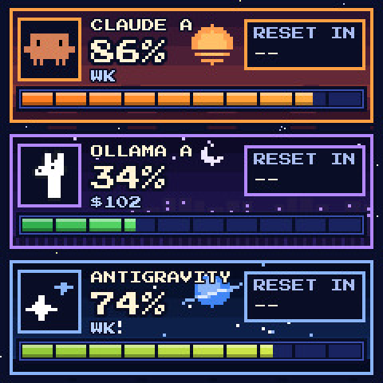
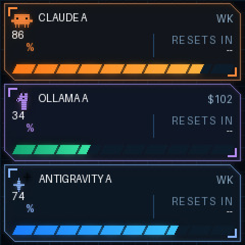
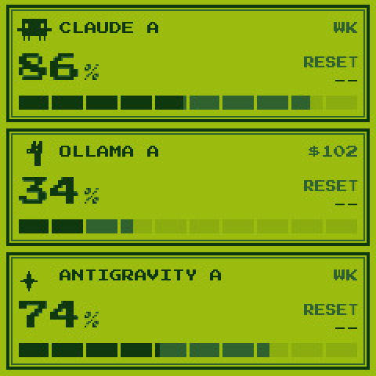

The clock thinks it is a photo frame 🖼️
These clocks ship with vendor firmware, no source, and no warranty worth the name. Replacing it means opening the case and soldering. So TokenTV doesn't. It uses a feature the stock firmware already has: a photo album with an HTTP upload endpoint, and a theme that shows a photo full-screen.
Reads and draws
Reads your usage through each provider's own login, then draws a 240×240 picture with Pillow.
Uploads a photo
Posts the image to the clock's album and selects the photo theme. No firmware, no agent, no SDK.
Displays a picture
It has no idea what it is showing. That is the whole point: nothing on the device can break.
What is actually inside 🔌
Identified by disassembling the vendor firmware and cross-checking against open-source ports for the same board. The USB-C port is power only — there is no serial chip — which is why the device is driven entirely over Wi-Fi.
AI Product & Form Concept
The 3D generative vision for TokenTV as a dedicated desk appliance: retro TV casing, neon underglow, speed gauges, and token progress meters.
🎧 Click Unmute for voiceover & sound (10s)Real 240×240 IPS Hardware
The animated hybrid face running on the physical $5 white clock: pixel mascot strolling the divider rule, starfield twinkle, and live AI quotas + market changes with stock firmware.
Get the $5 Clock on AliExpress →| Part | What it is |
|---|---|
| Device | AliExpress mini weather clock / electronic photo album (1.54″ retro TV chassis) |
| MCU | ESP8266, ESP-12F class, running the Arduino ESP8266 core on the NONOS SDK — not an ESP32 |
| Flash | 4 MB GD25Q32C, brought up in QIO mode |
| Panel | 240×240 IPS, ST7789 family, SPI mode 3 at 40 MHz, BGR order, inversion on |
| Pins | SCLK 14, MOSI 13, DC 0, RST 2, backlight 5 (active-low), CS unused |
| Filesystem | LittleFS, ~2.98 MB, holding photos, fonts and the web pages |
| Settings | Emulated EEPROM — a single 4 KB sector with no wear levelling |
| Input | None. No buttons, no touch. It is a display. |
| Discovery | None. No mDNS, no MQTT, no WebSocket — you read its address off a 1.5″ screen |
From an API call to a picture 🔀
Python 3.10+ with Pillow as the only runtime dependency. No database, no queue, no container, no cloud. Persistent state is a handful of JSON files and the last image uploaded.
↔ scroll the diagram sideways
Eight faces, one snapshot 🎨
Every face is a Python function that receives the same normalised reading and draws a 240×240 image. Swapping face is a dropdown, not a redeploy. All renders below are from the project's sample data.

Both datasets on one screen. Three AI rows with usage gauges and the window each percentage is of, then four share rows. It only draws the market half while the market is open — outside the session it hands the whole screen back to the usage face, so the readable layout is what you see most of the day.

Hand-drawn 5×7 glyphs, no font files

Seven-segment, with a clock for short windows

Glow and rings

Pixel scenes per provider

Instrument panel

Four shades of green
There is a ninth, space, which returns an animated GIF rather than a JPEG — so the publisher picks the filename from the image's magic bytes rather than from the style name.
The part that was actually hard 💾
The clock keeps every frame in flash, and flash wears out. The obvious guard — skip the upload when the bytes are identical — turns out not to be enough, and the reason is worth stating because it is easy to get wrong.
- Byte dedupe — an identical frame is never rewritten.
- Countdown bucketing — the countdown is rounded up to whole buckets, so the face changes when the remaining time crosses an edge rather than every minute. A steady hour drops from twelve writes to four.
- A spaced write budget — uploads are spaced rather than given a quota. A quota lets a busy hour spend its whole allowance in the first twenty-five minutes and then freeze the display on a stale frame, which is the opposite of useful.
- A data-change override — the readings are fingerprinted separately from the countdown, so a percentage or price that actually moved bypasses the budget and goes out at once. A budget that defers real news is worse than no budget.
↔ scroll the diagram sideways
Two flash regions, and only one of them forgives you
Disassembling the firmware settled a question that had been shaping the design. The photo album is LittleFS — copy-on-write and wear-levelled, so a rewritten file lands on fresh blocks. That moved the wear estimate from months to the order of a decade, and demoted the write budget from a safety mechanism to good hygiene.
The settings are a different story. Everything written through the settings endpoint — brightness, the night window, the accent colours — lands in the ESP8266's emulated EEPROM: one 4 KB sector, rewritten whole on every commit, no wear levelling, holding the Wi-Fi credentials beside the display settings. That asymmetry kills an idea that looks attractive from the outside: using the accent colours as a cheap status channel, since they need no image upload. They are not cheap. They are the most fragile flash on the device.
What this was built from 🧬
TokenTV is a fork, and the original idea is not mine. This section is the honest ledger of which side of the line each piece came from.
🌱 The original
- The core insight — drive a stock-firmware clock by uploading pictures to its photo album
- The device layer for both clock API profiles, and the backup/restore flow
- Five clock faces and the web dashboard
- The Apple Watch endpoint
- The published demo and the project's Hackaday write-up
- SmallTV-Ultra support contributed by Ye Thi Ha Htwe
📚 Standing on
- adrienbrault/geekmagic-hacs — the only other project that documents and implements this exact clock's API profile
- bvweerd/geekmagic-tv-esp8266 and its forks — open-source firmware for the same board, which confirmed the pin map and panel
What I contributed 🔨
Twenty-three commits over three days, on top of the fork point. Two new providers, a second data domain, the flash-write discipline, and the hardware study that corrected the assumption underneath it all.
-
Two providers swapped, and one taken much further
Upstream shipped Codex and Grok. Both were replaced — Ollama Cloud and Antigravity. Ollama then needed real work: its limit is a monthly credit budget rather than a quota, so the allowance is derived from the account plan, spend is read over the credit period and labelled in dollars, the face counts down to the refill, and the account is verified against the email the API reports.
sources.py · usage.py · themes.py -
A second data domain: a share watchlist
A Finnhub-backed watchlist face, with its own poll loop, market-session awareness and palette — proving the device was never really about AI usage, but about any number worth glancing at.
stocks.py · 602 lines -
Flash-write discipline
Countdown bucketing, a spaced write budget, a data-change override, a photo-theme watchdog and a JPEG quality ladder — each one fixing a specific way the display could silently stop being true.
display.py · device.py · live.py -
Both datasets on one clock
The combo face, plus the ownership split that makes it safe: the watchlist runner became a pure feeder, so exactly one process owns the device. The market half only exists while the market does.
combo.py · live.py -
The clock's own settings, and its identity
Brightness and the night window moved out of the device's web UI and into version-controlled config, applied only where they differ. The clock is now pinned by MAC address, because a DHCP lease can move an address between identical-looking devices and nothing else would notice.
device.py · sources.py -
A hardware study that changed the design
Disassembling the vendor firmware established the chip, the panel, the route table and the pin map — and corrected a wrong assumption about the filesystem that had been inflating the flash-wear estimate by an order of magnitude. It also turned up a firmware quirk the hard way: deleting one photo silently re-enables every remaining one.
Ghidra · 2,809 functions recovered -
Documentation the fork did not have
A changelog, an architecture document, a firmware and HTTP-surface reference, three generated interactive diagrams that cite the source lines they were built from, and an agent guide for whoever works on it next.
+802 lines of prose
What would come next 🔭
Proposed · not built
The limitation worth attacking is not wear. It is the contract: the only way to change a pixel is to store a whole image. A custom firmware could change the device from a picture frame you rewrite into a display you draw on — accepting a frame over HTTP, decoding it straight to the panel in tiles, and never touching the filesystem at all. The write budget would stop existing, and every existing face would keep working, because the rendering stays on the host.
It is a weekend's work and a £5 serial adapter, plus a full flash backup first, because the vendor image restores the firmware but not the photos. Whether that is worth opening the case is a separate question from whether it would work.